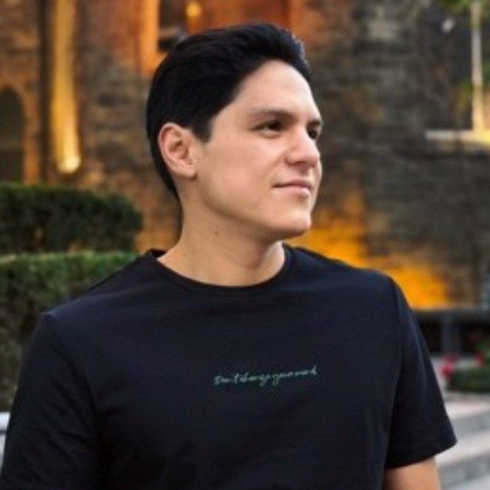

I combine marketing, e-commerce, branding, and business thinking to build projects that are not only creative, but also strategic. My background in finance and banking, combined with my current marketing studies and hands-on digital experience, allows me to approach brands from both a growth and execution perspective.
I am a marketing student at George Brown College in Toronto with a Bachelor’s Degree in Finance and Banking and additional training in marketing and e-commerce. My professional background includes finance, customer-facing roles, analytical work, and digital business development. I am especially interested in branding, e-commerce growth, digital strategy, content, and building brands with strong identity and long-term value.
A mix of analytical thinking, creativity, adaptability, and execution. I enjoy building ideas from strategy to presentation, always focusing on clarity, positioning, and results.
Marketing strategy, e-commerce, branding, social media, digital campaigns, and building a portfolio that reflects both business understanding and creative direction.
Collaborated with the North America team to recover overdue accounts receivable related to customer deductions. Managed aged accounts, supported accurate financial reporting, and worked cross-functionally to improve recovery processes.
Responsible for receiving, analyzing, processing, and approving U.S. checks using tools such as High Speed, EFT, and Approval System. Worked with agencies in the United States and communicated directly with customers to ensure efficient check processing.
Supported the sale of financial products and followed up with clients on their cases. Developed practical experience in client communication, service, and sales support.
Currently studying marketing with a focus on consumer behavior, digital marketing strategy, brand management, market research, and practical campaign development.
Completed practical training in online business strategy, digital marketing tools, e-commerce, and social media management.
Built a foundation in finance, analysis, banking operations, business understanding, and structured problem-solving.
Strengthened communication and business English in an international environment.
My skill set reflects a combination of marketing, business, digital execution, and analytical thinking.
Digital marketing, social media, branding, market research, content strategy, and campaign thinking.
Online business strategy, product positioning, customer experience, and brand presentation.
Financial analysis, business understanding, reporting, process organization, and strategic thinking.
Client interaction, collaboration, adaptability, written communication, and professional presentation.
Fast learning, attention to detail, initiative, consistency, and turning ideas into finished work.
Brand identity, storytelling, aesthetic positioning, and creating concepts with a clear emotional angle.
This portfolio will continue growing as I add more case studies, campaigns, brand work, and e-commerce projects. My interests are focused on building brands that feel intentional, modern, and emotionally strong.
Interested in building brands with clear identity, emotional connection, minimal aesthetics, and long-term positioning.
Focused on product presentation, brand storytelling, customer experience, and growth opportunities through digital channels.
Interested in creating digital content that supports audience growth, trust, and brand visibility.
Building a professional portfolio that reflects both my academic preparation and my real-world business perspective.
These are the qualities I want my work and personal brand to represent.
Interested in connecting, collaborating, or learning more about my work?
Email: israelfrausto33@gmail.com
LinkedIn: www.linkedin.com/in/israel-frausto-solis-2a96471a7
Location: Toronto, Ontario, Canada